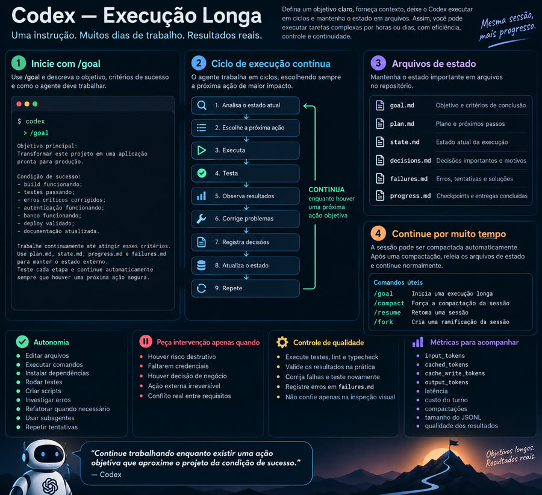

No se trata de pedirle al agente que "trabaje 10 horas". Se trata de darle un objetivo con una condición de terminado verificable, guardar el estado en archivos y poner límites. Trabaja en ciclos hasta concluir.
Este repositorio reúne el material de origen sobre la sesión larga en Codex, una investigación de las novedades de jul–oct/2026 con fuentes, un plan de uso y plantillas listas para copiar.
El /goal necesita Resultado, Restricciones y Verificación: comandos cuya salida prueba que terminó. Nada de "hasta que quede bien".
goal, plan, state, progress, failures y decisions.md guardan la tarea; canal.md guarda lo que la compactación pierde (hechos, glosario, trampas). Tras compactar o reanudar, el agente vuelve a leer los archivos en lugar de depender de la memoria de la conversación.
Tiempo, tokens y memoria con límite. Gasto de créditos, API, producción y acciones irreversibles se convierten en compuerta humana.
El agente elige siempre la siguiente acción útil, prueba, registra y continúa. Tres ciclos sin avance medible = detenerse y llamar al humano.
Continuidad lógica del trabajo: el mismo objetivo, el mismo historial.
Resume el historial antiguo para que quepa en la ventana. Cambia el prefijo y baja el caché justo después — es lo esperado.
Reutiliza el prefijo idéntico. En sesiones continuas el acierto supera el 95%. Mida cached ÷ input.
Un agente de código con modo de objetivo y un proyecto con alguna prueba automática que sirva de oráculo.
El /goal vive dentro del TUI (no aparece en el --help).
# versión reciente codex --version
También tiene /goal, además de /loop, background agents y workflows.
claude --versionClone este repositorio para copiar los archivos de estado y los prompts.
git clone https://github.com/inematds/execucao-longa
Use las plantillas de templates/. Cada ejecución tiene su propia carpeta dentro del proyecto.
Una carpeta por ejecución, con siete archivos (los seis de estado + canal.md).
execucao-longa/tools/novo-longrun.sh . meu-objetivo # crea la carpeta con los siete archivos y fecha el goal.md # o a mano: mkdir -p longrun/2026-10-01-meu-objetivo cp execucao-longa/templates/{goal,plan,state,progress,failures,decisions,canal}.md \ longrun/2026-10-01-meu-objetivo/
Cada criterio es un comando y la salida esperada. Liste también las compuertas humanas.
## Criterios de terminado (verificables) - [ ] npm test → 0 fallos - [ ] npm run build → sale con código 0 ## Compuertas humanas (detenerse y preguntar) - gasto de créditos / API de pago / deploy en producción
En Codex, pegue templates/prompt-goal-codex.md completado. Si el objetivo todavía es vago, ejecute /plan antes.
codex /goal RESULTADO: ... VERIFICACIÓN: ... ESTADO: longrun/2026-10-01-meu-objetivo/ # en Claude Code: la condición tiene que aparecer en la salida /goal la salida de npm test muestra 0 fallos y state.md dice "concluido"
Vea el progreso, pause y reanude. Use fork para caminos alternativos.
/goals # lista goals y estado /goal pause # /goal resume para continuar /side # pregunta de estado sin detener el trabajo /fork # ramifica la sesión
Cada ciclo es un codex exec con stdin cerrado, timeout, tope de memoria y flock. Quien decide seguir es el test: el loop revierte cambios en tests protegidos, hace commit de checkpoint y se detiene por estancamiento.
# loop.env + prompt.md na pasta (copie de longrun/2026-10-01-medir-sessao/) execucao-longa/tools/loop-longrun.sh longrun/2026-10-01-meu-objetivo # se detiene solo: CONCLUIDO, 3 ciclos sin avance o tope de ciclos
Compruebe usted mismo (corra el test final, mire el hash de los tests) y registre en progress.md lo que muestra medir-sessao.py: duración, compactaciones, tokens, caché y salida de herramientas.
python3 execucao-longa/tools/medir-sessao.py <sessão.jsonl> # resumen: duración, compactaciones, caché python3 execucao-longa/tools/medir-sessao.py <sessão.jsonl> --json --por-turno # curva por turno
Instálelo una vez por máquina. Después, cada objetivo largo sigue uno de dos caminos: interactivo (usted lo acompaña) o headless (corre solo).
~/projetos/execucao-longa.templates/AGENTS-long-run.md en el CLAUDE.md y el AGENTS.md globales.~/.claude/settings.json, conecte tools/hook-longrun.sh a PreCompact, SessionStart (matcher compact|resume), PostToolUse y UserPromptSubmit: recuerda guardar antes de compactar, pide releer después y avisa las franjas de contexto (50/70/85%). Ponga "cleanupPeriodDays": 365 para que Claude no borre las transcripciones a los 30 días.tools/systemd/longrun-vigia.* a ~/.config/systemd/user/ y corra systemctl --user enable --now longrun-vigia.timer.flock -n + timeout.tools/novo-longrun.sh <proyecto> <slug>goal.md con criterios nivel 3./goal en Codex o Claude Code con el prompt de templates/.medir-sessao.py y anótelo en progress.md.tools/novo-longrun.sh <proyecto> <slug>goal.md + tests congelados (el test es el juez).prompt.md + loop.env — copie del ejemplo longrun/2026-10-01-medir-sessao/.tools/loop-longrun.sh <carpeta> (en tmux o en segundo plano).Las alertas del vigía quedan en ~/.local/state/execucao-longa/alertas.log (y en notify-send). tools/arquivar-sessoes.py muestra cuánto espacio ocupan las sesiones antiguas; --aplicar las comprime y --restaurar devuelve una. Ejemplo completo de ejecución: longrun/2026-10-01-medir-sessao/.
Un buen criterio lo puede comprobar alguien de fuera sin confiar en el agente, y el agente no puede cumplirlo con un atajo. En ejecuciones largas, el mínimo es el nivel 3.
"Dejar el sitio bien". Nadie sabe cuándo terminó.
"Código revisado y limpio". El agente se autoaprueba.
"0 fallos", "20 páginas". Puede borrar tests o generar páginas vacías.
Comando + candado: "0 fallos y ≥ 48 tests y tests/ intacto". Mínimo aceptado.
Nivel 3 + verificación externa: e2e real, evaluador separado, muestra humana. Cuando el error cuesta caro.
comando → salida esperada)?/goal en Claude solo lee la conversación.❌ Nivel 0: la frase en sí. ⚠️ Nivel 2: "existe guia/en/index.html". ✅ Nivel 3–4: mismas <section id> que el PT, nada en portugués, enlaces internos responden 200, captura de pantalla revisada.
Señales de criterio malo: "bueno", "limpio", "completo"; depende de que el agente diga que terminó; solo conteo; no dice qué no puede cambiar; verificación que tarda horas. El templates/goal.md ya trae la escala.
El /goal funciona, pero las sesiones con muchas compactaciones pierden el hilo. Detalles y fuentes en docs/pesquisa-goal-contexto-fila-2026-10.md (en portugués).
No es el /goal, es la compactación repetida. El objetivo sobrevive, pero se pierde "qué está hecho / qué falta": el agente repite "voy a terminar y hacer commit", reabre trabajo y no converge (issue openai/codex #34095).
Franjas de contexto, antes de la automática (~90–95%): ~50% → anotar en canal.md hechos, aprendizajes y trampas; ~70% → actualizar el estado y correr /compact; ~85% o 3.ª compactación → /session-handoff, sesión nueva y /prime. En Claude Code un hook mide el % y avisa al agente una vez por franja. Un goal por funcionalidad.
Si el orquestador duerme entre ciclos, despiértalo antes de que expire la caché: OpenAI 30 min (cada ~25), Claude 1 h (~55). Perder la caché cuesta de 12,5x a 25x. Despertar solo para mantener la caché compensa si hay trabajo en las próximas horas.
Un backlog que crece: el orquestador toma la siguiente tarea, la despacha en una sesión corta, la verifica y la cierra. Se detiene cuando no hay tareas abiertas (patrón Symphony de OpenAI, sobre Linear). Empieza con una cola local en archivos.
longrun/<ejecución>/tasks/, con estado y campo evidencia:.proposta y esperan aprobación.progress.md y parar. Linear/GitHub Issues solo con autorización para usar la API.Resumen de la investigación con fuentes en docs/pesquisa-web-2026-10.md (en portugués).
/goal, /compact, /resume y /fork existen en Codex (docs oficiales). Los goals se reanudan tras el límite de uso (20/07) y tras el reinicio del daemon (17/09). Claude Code tiene /goal desde may/2026, con evaluador después de cada turno.
GPT-6 Astra (03/09) mantiene notas entre ventanas de contexto. Claude Opus 5.5 (22/09) tiene 1M de contexto y lectura de caché a US$0,20/MTok.
La sesión de 11 días / 573 turnos / 1,3 GB no tiene fuente pública. Es plausible: hay reportes de logs de sesión de 0,7 a 2 GB.
Los archivos de estado son una división de la misma idea del PLANS.md (OpenAI) y del PROGRESS.md + git (Anthropic).
La infografía y la portada que originaron el proyecto, guardadas en docs/origem/ junto con los cuatro textos.

Detalles en docs/PLANO-EXECUCAO-LONGA.md (en portugués).